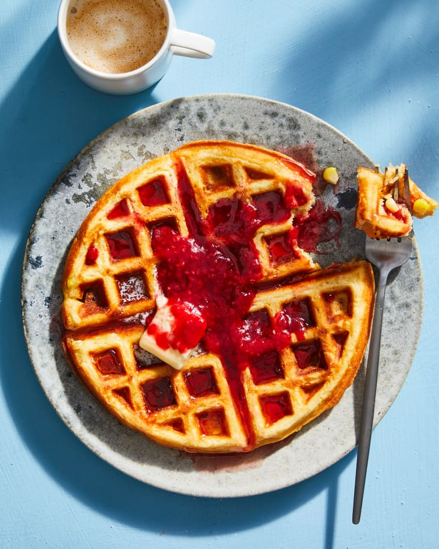

Corn Waffles

Fresh Corn Waffles Will Give Your Breakfast a Summery Spin
Ingredients
- 4 tablespoons (1/2 stick) unsalted butter, plus more for serving
- 2 ears shucked fresh corn, divided
- 1 1/2 cups buttermilk
- 1 teaspoon vanilla extract
- 2 large eggs
- 1 3/4 cups all-purpose flour
- 1/3 cup packed light brown sugar
- 2 teaspoons baking powder
- 1/2 teaspoon kosher salt
- Blueberry compote, raspberry sauce, maple syrup, or powdered sugar
for serving
Steps
- Heat a waffle iron to medium-high according to manufacturer’s
instructions. Meanwhile, make the waffle batter.
- Cut 4 tablespoons unsalted butter into 4 pieces. Place in a medium
microwave-safe bowl and microwave until melted, 20 to 30 seconds.
- Cut the kernels from 1 ear of the fresh corn: Place on a cutting
board on its side. Cut down the side of the cob to remove the kernels.
Rotate the cob so the flat (cut) end is against the board and continue
cutting and rotating. Transfer to the bowl of butter. Grate the
remaining 1 ear on the large holes of a box grater directly into the
same bowl.
- Add 1 1/2 cups buttermilk and 1 teaspoon vanilla extract to the bowl.
- Separate 2 large eggs, adding the yolks to the bowl of corn and the
whites to a separate medium bowl (preferably stainless steel). Stir
the corn mixture until combined. Whisk the egg whites until soft peaks
form, 3 to 4 minutes.
- Place 1 3/4 cups all-purpose flour, 1/3 cup packed light brown sugar,
2 teaspoons baking powder, 1/2 teaspoon kosher salt in a large bowl and
whisk to combine.
- Add the buttermilk-corn mixture and stir until just combined and all
of the flour is moistened. Do not overmix.
- Add the egg whites to the batter. Use a spatula to fold the batter
until just incorporated (a few streaks of egg white are okay).
- Coat the waffle iron with cooking spray. Spoon the batter into the
waffle iron, a heaping 1/3 cup for regular (4-inch) waffles or scant
1 cup for Belgian waffles. Cook according to the manufacturer’s
instructions, about 6 minutes for regular waffles and 4 minutes for
Belgian waffles. Enjoy while still warm with blueberry compote or
raspberry sauce and a dusting of powdered sugar, or maple syrup and
more butter.